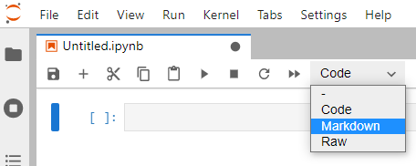

Python for experimental sciences - chapter II
Posted on 10/04/2021Data analysis and reports
The previous chapter gave an overview of Python and Numpy, which allowed us to learn the language, manipulate data, evaluate and plot functions. In this chapter we will see how to represent data tables in Python, how to save and load data from files and also how to fit the data to theoretical models. Besides Numpy (numeric manipulation) and Matplotlib (plots), we will use other Python libraries as Pandas (tables) and Scipy (data fitting). Later on it will be shown how to use Jupyter notebook to write reports. There is a short description on how to use the Markdown syntax to compose a document and an later there is an overview of syntax to write mathematical expressions.
Data tables in Pandas
Suppose that the position and velocity of a particle are measured as a function of time. The measured data is represented below and we want to represent this table in Python.
| time | position | velocity | |
|---|---|---|---|
| 0 | 1 | 1 | 2 |
| 1 | 2 | 4 | 4 |
| 2 | 3 | 9 | 6 |
| 3 | 4 | 16 | 8 |
| 4 | 5 | 25 | 10 |
The first column indicates the corresponding line number of the table. Python starts counting from 0 by default.This data can be represented using the code below. Explaining line by line, first we ensure that the %pylab inline magic is called. We also import the Pandas library to handle tables. Pandas is imported with the nickname pd to simplify some expressions that will be used later. The table data itself is stored in what Pandas calls a DataFrame which we will call df. After a clean dataframe df is created, we may generate it’s columns with the definition of a column label and the data directly. The data itself in our case is a Python list, which as previously stated is an ordered set of values between [] and separated by commas ,. The spaces are optional and can be used to make easier to see the data being written, but remember that the decimal separator is always a period .. Also, the first element in each column list correspond to the first table line (first measurement). For example, the third measurement (third line) corresponds to the time 3, position 9 and velocity 6. After setting the table contents, we may show the dataframe contents as a table using df in the last line.
%pylab inline
import pandas as pd
df = pd.DataFrame()
df['time'] = [1, 2, 3, 4, 5]
df['position'] = [1, 4, 9, 16, 25]
df['velocity'] = [2, 4, 6, 8, 10]
dfIf we want to plot the position as a function of time, it is possible to use simply the code below. df.plot uses the column labels to identify the data points horizontal and vertical coordinates. It is often a good practice to represent experimental data as a scatter plot, where each measurement is represented by an isolated point. Also, while df.plot accepts several specific arguments (see the documentation pressing SHIFT+TAB keys or the documentation), the matplotlib commands to adjust plot properties as the title and label axis described in the last chapter still can be used. Always remember to place adequate axis labels (containing the relevant units) and an explanatory title.
df.plot('time', 'position', kind='scatter')
title('Position vs time')
xlabel('Time (s)')
ylabel('Position (m)')
savefig(r'assets\pes_pos_scatter_plot.png')
It is quite simple to perform calculations over DataFrame columns. Whenever we call a column as df['time'], we may consider that we are performing mathematical operation simultaneously over each element. For example, to create a new column containing \(\sqrt{t} + 1\) we can use simply that
df['sqrt(t) + 1'] = sqrt(df['time']) + 1
df| time | position | velocity | sqrt(t) + 1 | |
|---|---|---|---|---|
| 0 | 1 | 1 | 2 | 2.000000 |
| 1 | 2 | 4 | 4 | 2.414214 |
| 2 | 3 | 9 | 6 | 2.732051 |
| 3 | 4 | 16 | 8 | 3.000000 |
| 4 | 5 | 25 | 10 | 3.236068 |
The operations performed with df['column'] are performed for each element in the column, such we can use a single line to calculate over several numbers. If we want to select a given line, we may use df.iloc[i], where i is the corresponding line number. Also notice that we can add columns whenever we want. If there is some column that we want to remove completely we may apply the instruction line del df['column']. Raising the column to a power of 0.5, as in df['time']**0.5, is an alternative to use sqrt. Also, the basic operations (+-*/) are supported. The %pylab inline magic also allows us to use several mathematical functions as sin, cos, tan, their inverses, arcsin, arccos, arctan, exponentials and natural logarithms as exp, log. For example, we can use the code below to evaluate \(\sin x\) at 10 equally spaced points along x.
df = pd.DataFrame() # Clears df
# x contains 101 equally spaced values from 0 to 15
df['x'] = linspace(0, 15, 101)
df['sin x'] = sin(df['x'])
df.plot('x', 'sin x')
savefig(r'assets\pes_sine_plot.png')
The graphical representation (and the dataframe itself) can be used to find (or approximate) roots of transcendental equations. For instance, suppose that we want to find the solutions of \(A x = \sin x\). The previous problem can be expressed as finding the zeros of \(\sin x - A x\). Suppose that we want to evaluate the solutions for both \(A=0.2\), we may use Pandas to evaluate that
df['A=0.2'] = sin(df['x']) - 0.2 * df['x']
df.plot('x', 'A=0.2')
savefig(r'assets\pes_transcendental_sol_plot.png')
We can see that there is a trivial solution at x=0 but there also should be a solution around x=2, where the function becomes zero again. How to find the best value? We can directly look out for the values in df['A=0.2'], but there are just too many values. A simpler way however is to ask Pandas to filter the DataFrame and consider only values which are sufficiently close to 0. This way we have to look only in a smaller subset of the data. The condition abs(df['A=0.2']) < 0.1 asks Pandas to filter the table rows where the absolute value of df['A=0.2'] is smaller than 0.1, and shows only these values.
df[abs(df['A=0.2']) < 0.1]| x | sin x | A=0.2 | |
|---|---|---|---|
| 0 | 0.00 | 0.000000 | 0.000000 |
| 17 | 2.55 | 0.557684 | 0.047684 |
The table above implies that \(x=2.55\) has \(\sin x - 0.2 x = 0.05\) which, although not being an exact solution, is a reasonable approximation. The quality of the approximation improves if the spacing between x values becomes smaller, which can be achieved by reducing the range of x values or increasing the number of points. There are more accurate methods to find roots which will be discussed later.
Let’s now consider a new DataFrame where we will see some plotting capabilities. We will create a column x which contains numbers from 1 to 10 using a Numpy’s arange and then create some powers of x as
df = pd.DataFrame() # Clears df
df['x'] = arange(1, 11) #Array of integers from 1 to 10=11-1
df['x**2'] = df['x']**2
df['x**3'] = df['x']**3
df['x**0.5'] = df['x']**0.5
df| x | x**2 | x**3 | x**0.5 | |
|---|---|---|---|---|
| 0 | 1 | 1 | 1 | 1.000000 |
| 1 | 2 | 4 | 8 | 1.414214 |
| 2 | 3 | 9 | 27 | 1.732051 |
| 3 | 4 | 16 | 64 | 2.000000 |
| 4 | 5 | 25 | 125 | 2.236068 |
| 5 | 6 | 36 | 216 | 2.449490 |
| 6 | 7 | 49 | 343 | 2.645751 |
| 7 | 8 | 64 | 512 | 2.828427 |
| 8 | 9 | 81 | 729 | 3.000000 |
| 9 | 10 | 100 | 1000 | 3.162278 |
Now we want to plot the columns involving \(x^2\) and \(\sqrt{x}\) in the same plot. We can use the following instructions.
ax1 = df.plot('x', 'x**2' , color='red' , kind='scatter')
ax2 = df.plot('x', 'x**0.5', color='blue', kind='scatter',
ax=ax1)
savefig(r'assets\multiple_scatter_plot.png')
In the above plot we have set the colors for each scatter plot. several named colors are available, with common names in English being available. To ensure that they are in the same figure it is necessary to be explicit by defining that both share their plot axes through ax=ax1. If this instruction is removed, we will obtain two separate plots.
Notice that in the previous combined plot it is not possible to see how \(\sqrt{x}\) varies. When the data varies by orders of magnitude it is often interesting to use logarithmic scales. Below we repeat the previous plot, but now ensuring that both axes are logarithmic by setting logx=True and logy=True. Notice that the log scaling in each axis is set separately.
ax1 = df.plot('x', 'x**2' , color='red' , kind='scatter',
logx=True, logy=True)
ax2 = df.plot('x', 'x**0.5', color='blue', kind='scatter',
ax=ax1)
savefig(r'assets\multiple_scatter_plot_logxy.png')
Whenever we see a linear curve with logarithmic axes the data must be described by a curve like \(y = a x^n\), since the relation between \(\log x\) and \(\log y\) in \(\log y = \log a + n \log x\) is equivalent to that of a straight line with intercept at \(\log a\) and slope \(n\). Suppose that we want to find a model that closely describes our data. The straight line in the log-log plot indicates the general relation, \(y=ax^n\), but we still have to determine the values of \(a\) and \(n\). We will perform this in the next section
Data fitting
To fit experimental data to a proposed model, we will use another library. Scipy provides several numerical methods useful in scientific computing. In particular, it has several optimization methods to minimize, find roots and curve fitting. To add such capabilities to our program, we have to import Scipy’s optimize in our program as follows.
%pylab inline
import pandas as pd
from scipy import optimize
df = pd.DataFrame()
df['x'] = arange(1, 11) #Array of integers from 1 to 10=11-1
df['x**2'] = 0.3 * df['x']**2
df['x**3'] = 5 * df['x']**3
df['x**0.5'] = pi * df['x']**0.5The data generated above behaves as a power law, \(y= A x^n\). To use Scipy’s curve_fit, we have to define a power law function as is given below. Notice that both the independent variable x and the parameters A and n are given as function input parameters, and the function returns the value associated with A * x **n. It’s remarked that curve_fit requires that the parameters to be fit (A, n) must be given after the independent variable x.
def power_law(x, A, n):
return A * x ** nNow we can fit the data present in the dataframe df. optimize gives two outputs. The first, popt, gives the optimal parameter values. popt[0] gives the best estimate for the first parameter of power_law (A), while popt[1] is associated with the value of n. pcov gives the covariance matrix between the fitting parameters, and is particularly relevant when the parameters are correlated. The error associated with the statistical uncertainty of the data can be obtained from pcov by taking the square root of its diagonal. As given below, error[0] is related to the uncertainty in A while error[1] corresponds to n.
popt, pcov = optimize.curve_fit(power_law, df['x'], df['x**0.5'])
error = sqrt(pcov.diagonal())
popt, error(array([3.14159265 0.5 ]), array([3.05923019e-16 5.08058315e-17]))From the example above is it possible to state that \(A = 3.14159265 \pm 3.05923019 \cdot 10 ^ {-16}\) and \(n = 0.5 \pm 5.08058315\cdot 10^{-17}\)? These small uncertainty levels are limited to the machine accuracy, such they are meaningless in the real world. Statistical errors are often reported with at most 1 or 2 significant digits. Do not report all of the numbers shown from the fitting procedure above when considering real world data. You must round the uncertainty to 1 or 2 significant digits and then see how many significant digits there are in your mean value. Round the reported mean values from the adjusted error. For example, the uncertainty in A should be rounded to \(3 \cdot 10 ^ {-16}\), which indicates that we could report the value of \(A\) up to \(10 ^ {-16}\). Since the mean value for A shows only the significant digits up to \(10^{-8}\), we can state that \(A=3.14159265\) with no significant uncertainty. Application of the same reasoning to \(n\) implies that \(n=0.5\). Therefore, the data set above corresponds to \(y = 3.14159265 x^{0.5}\), as it should be. Change the code above to fit the other columns, x**2 and x**3 and see that you obtain the correct values for \(A\) and \(n\).
We may represent the original data and the fitted curve in the same plot to visually inspect the quality of the fitting procedure and the model suitability. The procedure is similar to the one showed in the end of the previous section, but here we will create another DataFrame to show the proposed model at a higher resolution than the original data. Also notice that we added an option to remove the plot legend of df2, which is on by default.
df2 = pd.DataFrame()
# x contains 101 equally spaced points from 1 to 10
df2['x'] = linspace(1, 10, 101)
# Remember that popt[0] corresponds to A and popt[1] to n
df2['y'] = power_law(df2['x'], popt[0], popt[1])
ax1 = df.plot('x', 'x**0.5', kind='scatter',
logx=True, logy=True)
ax2 = df2.plot('x', 'y', ax=ax1, legend=False)
savefig(r'assets\scatter_plot_fitting_data.png')
Let’s now work on a more challenging fit. Consider the hypothetical data set below associated with the measurements of the signal normalized amplitude versus frequency (in rad/s) for a resonating circuit. The table is transposed (df.T) for a better visualization.
df = pd.DataFrame()
df['Frequency'] = [100, 200, 300, 400, 500, 600, 700, 800, 900, 1000]
df['Amplitude'] = [0.11, 0.32, 0.96, 0.54, 0.31, 0.22, 0.18, 0.15, 0.12, 0.11]
df.T| 0 | 1 | 2 | 3 | 4 | 5 | 6 | 7 | 8 | 9 | |
|---|---|---|---|---|---|---|---|---|---|---|
| Frequency | 100 | 200 | 300 | 400 | 500 | 600 | 700 | 800 | 900 | 1000 |
| Amplitude | 0.11 | 0.32 | 0.96 | 0.54 | 0.31 | 0.22 | 0.18 | 0.15 | 0.12 | 0.11 |
The model for the resonating circuit amplitude response is given by \[y = \frac{1}{\sqrt{1 + A \left(\frac{x}{w_r} - \frac{w_r}{x}\right)^2}},\] which has two parameters, \(A\) and \(w_r\). Let’s try to repeat the previous procedure to fit this data. We have to define the fitting function model, ressonant, and use optimize.curve_fit to find the best values of \(A\) and \(w_r\). Later we try to represent both the original dataset and the model in the same plot. Everything is done at one in the block of code below.
def ressonant(x, A, wr):
return 1 / sqrt( 1 + A * (x/wr - wr/x)**2 )
popt, pcov = optimize.curve_fit(ressonant,
df['Frequency'], df['Amplitude'])
error = sqrt(pcov.diagonal())
print(popt, error)
df2 = pd.DataFrame()
df2['x'] = linspace(100, 1000, 101)
df2['y'] = ressonant(df2['x'], popt[0], popt[1])
ax1 = df.plot('Frequency', 'Amplitude', kind='scatter')
ax2 = df2.plot('x', 'y', ax=ax1, legend=False)
savefig(r'assets\scatter_plot_fitting_resonant_data_attempt1.png')
The fit fails miserably. What has gone wrong? The fitting procedure indeed has found a solution which goes through the middle of the data, but it could not adjust the peaking behavior close to 300. Numerically this is a very unstable problem and we must give an initial guess to optimize.curve_fit. To that purpose, we must understand the meaning of the initial parameters and try to inform an initial estimate for \(A\) and \(w_r\). Notice that the present model for the resonant circuit amplitude has \(y=1\) when \(x=w_r\), such that \(w_r\) is associated with the position where the data becomes maximum. As an initial guess, we can try to use \(w_r = 300\). The parameter \(A\) is related with the width of the peak, such that we may consider an initial estimate of \(A=100\). To inform this initial guess to optimize.curve_fit we add these guesses to initial_guess and inform this as p0 to curve_fit. The remaining of the code is essentially identical.
initial_guess = [100, 300]
popt, pcov = optimize.curve_fit(ressonant,
df['Frequency'], df['Amplitude'], p0=initial_guess)
error = sqrt(pcov.diagonal())
print(popt, error)
df2 = pd.DataFrame()
df2['x'] = linspace(100, 1000, 101)
df2['y'] = ressonant(df2['x'], popt[0], popt[1])
ax1 = df.plot('Frequency', 'Amplitude', kind='scatter')
ax2 = df2.plot('x', 'y', ax=ax1, legend=False)
title("Signal amplitude after a resonant circuit")
xlabel("Frequency (rad/s)")
ylabel("Amplitude (normalized)")
savefig(r'assets\scatter_plot_fitting_resonant_data_attempt2.png')[ 10.06551017 313.950265 ] [0.10765985 0.44215353]

Now it is clear that the best fit parameters closely follow the initial data. Some instructions were added to set the plot title and axis labels. From the values of popt and error, the best values now are \(A=10.1 \pm 0.1\), while \(w_r=313.9 \pm 0.4\) rad/s. Notice that even though our fist estimate for \(A\) was wrong by an order of magnitude, the fitting procedure was successful. Therefore, sometimes we have to try several values for initial_guess. Instead of guessing blindly, we can try to compare the initial guess with the experimental data by replacing the parameters in df2['y'] to use the initial guess. After we are sufficiently satisfied with our initial guess we replace to the previous code. An example of how to achieve this is given below. When plotInitialGuess = True, the plot will ignore the fitted data. Then you may tune the values within initial_guess until you see a curve that somewhat follows the data. Then you may set plotInitialGuess = False and the code will automatically show the final plot result. Curve fitting needs some trial and error, so you may need to tune the parameters a few times.
plotInitialGuess = True
if plotInitialGuess:
df2['y'] = ressonant(df2['x'], initial_guess[0], initial_guess[1])
else:
df2['y'] = ressonant(df2['x'], popt[0], popt[1])The full code for fitting the curve is given below for convenience. Notice that it is visible how the curve width is too small with the initial guess for \(A\). With the code below you can tune initial_guess until the curve given by model has a pattern similar to the data. Then you should set plotInitialGuess = False and see if the best fit model seems to describe the data correctly. If the fit is satisfactory, extract the fit parameters. Otherwise you should set plotInitialGuess = True again and try to use a different initial_guess.
# model(x, parameters separated by commas)
def model(x, A, wr):
# return y(x) expressed in terms of the fitting parameters
return 1 / sqrt( 1 + A * (x/wr - wr/x)**2 )
# Initial guess for the parameter values (ordered as in the model)
initial_guess = [100, 300]
popt, pcov = optimize.curve_fit(model,
df['Frequency'], df['Amplitude'], p0=initial_guess)
error = sqrt(pcov.diagonal())
df2 = pd.DataFrame()
df2['x'] = linspace(100, 1000, 101)
plotInitialGuess = True
if plotInitialGuess:
df2['y'] = model(df2['x'], initial_guess[0], initial_guess[1])
else:
df2['y'] = model(df2['x'], popt[0], popt[1])
# Outputs the best fit params and associated errors
print("Fit parameters")
for i, (p, e) in enumerate(zip(popt, error)):
print('p[%d] =' % i, p, ' +- ', e)
ax1 = df.plot('Frequency', 'Amplitude', kind='scatter')
ax2 = df2.plot('x', 'y', ax=ax1, legend=False)
title("Output signal amplitude")
xlabel("Frequency (rad/s)")
ylabel("Amplitude (normalized)")
savefig(r'assets\scatter_plot_fitting_resonant_data_final.png')
Using the Jupyter notebook for scientific writing
With our previous discussion it is possible to analyze data. But how to write a report? It is possible to use common tools as a word processor, but we also can use our Jupyter notebook to produce reports in PDF format, slideshows and HTML webpages. While the standard PDF output is somewhat limited, it is possible to export to other formats (as LaTex) and edit the result to achieve professional looking documents. This is interesting because the data analysis and its analysis are condensed in the same file, making it easier to correct mistakes during the work. Also, the compatibility means that the document can be exported to a document format commonly used in the publication of scientific documents.
The Jupyter notebook is separated in cells. The default cells are for code, such we can execute portions of code separately and perform exploratory studies. We can add more cells (using the + button close to the save button in the snapshot below), split or join cells (see the Edit menu). However, the Jupyter screenshot below shows a menu where the type of the current cell can be chosen. The Markdown mode is adequate to type descriptive texts and can be placed anywhere within the notebook, such it is possible to mix explanations and the code necessary to achieve the results reported.

Markdown is a simple syntax developed to express document formatting in plain text. It is aimed at being simple and readable, such that it can be learned much more quickly than LaTex for example. Also, an interesting characteristic is that it allows the writer to focus on content instead of text formatting. This document is written using Markdown, and this syntax is recognized by several web tools. For example, to put emphasis in a text block we can write it between single asterisks *text* to obtain the text in italics. Writing between double asterisks around **some text** gives some text in bold. The table below shows some examples of what can be done.
| To obtain | type | to get |
|---|---|---|
| Italics | *italics* |
italics |
| Bold | **bold** |
bold |
| Inline code | `some code` |
some code |
| Math | $x = \sin\pi/2$ |
\(x = \sin\pi/2\) |
| Link | [link label](https://commonmark.org) |
link label |
| Image | {width=40px} |
The typing of hypertext becomes reasonably simple using the above syntax, and it can be memorized without too much effort. After you execute the cell, Jupyter notebook will automatically exhibit the formatted output. To use images in your computer as above, remember that it must be sent together with your notebook to be seen by someone else. Images from the web can be shown by using the adequate url. Some will be given later to help in writing mathematical expressions.
Another set of Markdown instructions is to handle sections and blocks of text. Notice that to separate between distinct blocks must be separated by blank lines. Your document can be divided in sections with the syntax below. Up to 6 levels can be used, and using this is interesting because it makes easier to navigate through the PDF and outputs.
# Section
## Subsection
### SubsubsectionTo add a quote, use
> quote textto achieve
quote text
A bullet list can also be written simply by writing the first character of each line as a * or -, as in
* item 1
* item 2
* item 3to achieve
- item 1
- item 2
- item 3
A numbered list can be achieved by starting the line with a number followed by a point. The numbering will start from the first number and the subsequent will be set automatically, such you don’t have to worry with the exact numbers written.
1. item 1
1. item 2
42. item 3gives
- item 1
- item 2
- item 3
An horizontal rule can be obtained by starting a line with --- or more dashes, achieving
To add comments that will not appear in the output, use <!--- hidden --->. The comments may also span several lines, as in
<!---
this entire block will not be shown in the output
so anything can be written here
--->A code section (or verbatim, unformatted and monospaced text) can be set inside some paragraph using the syntax above, but for longer sections it is possible to use the notation below
```
This is a section of text
which is useful to put some code
```which results in
This is a section of text
which is useful to put some codeFinally, while mathematical expressions can be placed inside the paragraph by placing the mathematical expression between single dollar signs, as in $x=2$ to obtain \(x=2\). However, to highlight some expression it is possible to write the expression between $$x=2$$ to separate it from the paragraph and make it centered, as in \[x=2\] The next subsection explains how to write some sophisticate mathematical expressions.
Writing mathematical expressions
is a very robust language used to produce documents, being actively developed since 1984. Throughout the years lots of add-ons there were developed to handle difficult aspects of document formatting, as advanced typography and taking care of references. is particularly powerful to typeset math expressions and has lots of features, and it’s notation became an important standard to write math using computers. Jupyter notebook does not carry the whole power of , since it is constrained to the features provided by MathJax. However, several general features are available and this subsection will start with an overview of mathematical symbols. For instance, the table below shows how to write greek letters.
| Symbol | Latex | Symbol | Latex | Symbol | Latex |
|---|---|---|---|---|---|
| \(\alpha\) | \alpha |
\(\iota\) | \iota |
\(\rho, \varrho\) | \rho, \varrho |
| \(\beta\) | \beta |
\(\kappa, \varkappa\) | \kappa, \varkappa |
\(\sigma, \Sigma, \varsigma\) | \sigma, \Sigma, \varsigma |
| \(\gamma, \Gamma\) | \gamma, \Gamma |
\(\lambda, \Lambda\) | \lambda, \Lambda |
\(\tau\) | \tau |
| \(\delta, \Delta\) | \delta, \Delta |
\(\mu\) | \mu |
\(\upsilon, \Upsilon\) | \upsilon, \Upsilon |
| \(\epsilon, \varepsilon\) | \epsilon, \varepsilon |
\(\nu\) | \nu |
\(\phi, \Phi, \varphi\) | \phi, \Phi, \varphi |
| \(\zeta\) | \zeta |
\(\xi, \Xi\) | \xi, \Xi |
\(\chi\) | \chi |
| \(\eta\) | \eta |
\(\,\) | |
\(\psi, \Psi\) | \psi, \Psi |
| \(\theta, \Theta\) | \theta, \Theta |
\(\pi, \Pi, \varpi\) | \pi, \Pi, \varpi |
\(\omega, \Omega\) | \omega, \Omega |
Notice that omicron is the only greek letter that is not explicitly supported since it is indistinguishable from the latin letter o. Regarding notation, superscripts and subscripts are written respectively as ^ and _, such $2^3$ and $a_n$ become \(2^3\) and \(a_n\), respectively. Quite often the latex expressions must have long sub- or super-scripts, such it is necessary to indicate with curly braces {} where the sub-(super-)script starts and ends. The next table also shows some common symbols and expressions in .
| Expr | Latex | Expr | Latex | Expr | Latex | Expr | Latex |
|---|---|---|---|---|---|---|---|
| \(^\circ C\) | ^\circ C |
\(\dot{x} \ddot{x}\) | \dot{x} \ddot{x} |
\(\approx\) | \approx |
\(\ell\) | \ell |
| \(e^{-x}\) | e^{-x} |
\(\int_a^b\) | \int_a^b |
\(\equiv\) | \equiv |
\(\Re \Im\) | \Re \Im |
| \(\Gamma_i^j\) | \Gamma_i^j |
\(\sum_{i}^{N}\) | \sum_{i}^{N} |
\(\propto\) | \propto |
\(\partial \nabla\) | \partial \nabla |
| \(\frac{a}{x}\) | \frac{a}{x} |
\(\cdot\,\times\) | \cdot\,\times |
\(\neq\) | \neq |
\(\square\) | \square |
| \(\vec{E}\) | \vec{E} |
\(\gg \geq\) | \gg \geq |
\(\pm \mp\) | \pm \mp |
\(\infty\) | \infty |
More comprehensive lists of symbols and operators can be found in the internet, as in Wikipedia for example. The following table contains the instructions for several standard functions and a few more symbols.
| Expr | Latex | Expr | Latex | Expr | Latex | Expr | Latex |
|---|---|---|---|---|---|---|---|
| \(\sin\) | \sin |
\(\exp\) | \exp |
\(\det\) | \det |
\(\sqrt[n]{a}\) | \sqrt[n]{a} |
| \(\cos\) | \cos |
\(\log\) | \log |
\(\lim\) | \lim |
\(\prod_i^N\) | \prod_i^N |
| \(\tan\) | \tan |
\(\ln\) | \ln |
\(\min\) | \min |
\(\oint\) | \oint |
| \(\sinh\) | \sinh |
\(\sec\) | \sec |
\(\max\) | \max |
\(\iint\) | \iint |
| \(\cosh\) | \cosh |
\(\csc\) | \csc |
\(\arg\) | \arg |
\(\iiint\) | \iiint |
| \(\tanh\) | \tanh |
\(\cot\) | \cot |
\(\sqrt{x}\) | \sqrt{x} |
\(\iiiint\) | \iiiint |
In Portuguese the sine function should be written as sen, and this is not included by default. So, it is possible to express it in notation using \operatorname{sen} x, which results in \(\operatorname{sen} x\). To finish this long list of available symbols, it’s useful to mention that has symbols which correspond to arrows and for brackets to group mathematical expressions. There are also instructions to control the spacing between symbols.
| Expr | Latex | Expr | Latex | Expr | Latex | Expr | Latex |
|---|---|---|---|---|---|---|---|
| \(\leftarrow\) | \leftarrow |
\(\uparrow\) | \uparrow |
\(()\) | () |
\(a \! a\) | a \! a |
| \(\Leftarrow\) | \Leftarrow |
\(\Uparrow\) | \Uparrow |
\([]\) | [] |
\(a a\) | a a |
| \(\rightarrow\) | \rightarrow |
\(\downarrow\) | \downarrow |
\(\{\}\) | \{\} |
\(a \, a\) | a \, a |
| \(\Rightarrow\) | \Rightarrow |
\(\Downarrow\) | \Downarrow |
\(\vert\) | \vert |
\(a \: a\) | a \: a |
| \(\leftrightarrow\) | \leftrightarrow |
\(\updownarrow\) | \updownarrow |
\(\Vert\) | \Vert |
\(a \; a\) | a \; a |
| \(\Leftrightarrow\) | \Leftrightarrow |
\(\Updownarrow\) | \Updownarrow |
\(\langle \rangle\) | \langle \rangle |
\(a \quad a\) | a \quad a |
Notice that the curly brackets must be preceded by \, since otherwise they would be confused with the arguments of functions. Normally the brackets have a fixed size, but it is possible to allow them to change their sizes depending on what they enclose. For example, the parenthesis in $(\frac{\int a}{b})$ will not match the height of what it encloses (try it). However, adding the instructions \left and \right to indicate what’s between the parenthesis it can adjust its size. This correction implies in writing \left(\frac{\int a}{b}\right) (see how the behavior changes). Finally, notice that the last column in the above table contains commands to change the spacing between symbols, ranging from a negative distance \! to quad spacing. There’s also \qquad which is even larger than \quad.
After showing so many possibilities, it is useful to show some examples on how to compose these symbols to write mathematical expressions. Below there are several examples where you can see how to express in a given formula.
A = \left(15.02 \pm 0.02\right) 10^{-2}\text{ m} \[A = \left(15.02 \pm 0.02\right) 10^{-2}\text{ m}\] \hbar = \frac{h}{2\pi} = 1.054 \cdot 10^{-34}\text{ J/s} \[\hbar = \frac{h}{2\pi} = 1.054 \cdot 10^{-34}\text{ J/s}\] y(x) = \int_0^1 t\, dt = \left.\frac{t^2}{2}\right|_{t=0}^1 \[y(x) = \int_0^1 t\, dt = \left.\frac{t^2}{2}\right|_{t=0}^1\] \sinh x= \frac{e^x - e^{-x}}{2} \[\sinh x= \frac{e^x - e^{-x}}{2}\] e^x = \sum_{i=0}^\infty \frac{x^i}{i!} = \lim_{n \rightarrow \infty} \left( 1 + \frac{x}{n} \right)^n \[e^x = \sum_{i=0}^\infty \frac{x^i}{i!} = \lim_{n \rightarrow \infty} \left( 1 + \frac{x}{n} \right)^n\] f(a) = \frac{1}{2\pi i} \oint \frac{f(z)}{z-a} dz \[f(a) = \frac{1}{2\pi i} \oint \frac{f(z)}{z-a} dz\] \vec\nabla\times\vec{H} = \mu_0\epsilon_0\frac{\partial\vec{E}}{\partial t} \[\vec\nabla\times\vec{H} = \mu_0\epsilon_0\frac{\partial\vec{E}}{\partial t}\] \ddot{x} + \gamma \dot{x} + \omega^2 x = 0 \[\ddot{x} + \gamma \dot{x} + \omega^2 x = 0\] w(z) = w_0 \sqrt{1 + \left(\frac{z}{z_R}\right)^2} \[w(z) = w_0 \sqrt{1 + \left(\frac{z}{z_R}\right)^2}\]
Notice that the equations between pairs of $$ above are centered and separated from the text paragraph. For long documents it’s important to number and reference equations. Jupyter can handle this automatically, even though there are some rough edges when editting the notebook. Create and execute a code cell (preferably right when the document begins) containing only the instructions below to instruct MathJax to number ams equation environments. Another option is to use all instead of ams, such that equations between pairs of $$ will also be numbered.
%%javascript
MathJax.Hub.Config({
TeX: { equationNumbers: { autoNumber: "ams" } }
});The ams equation environments support more advanced modes to display equations. In summary, each environment is declared as \begin{env} your equation \end{env}, where env must be replaced by the environment of interest. Below there are some examples of some environments. Use the examples below within markdown cells.
\begin{equation}
y(x) = a x^2 + b x + c. \label{eq:quadratic_formula}
\end{equation}\[\begin{equation} y(x) = a x^2 + b x + c. \label{eq:quadratic_formula} \end{equation}\]
\begin{multline}
y(x) = a x^2 \\
+ b x \\
+ c.
\end{multline}\[\begin{multline} y(x) = a x^2 \\ + b x \\ + c. \end{multline}\]
\begin{align}
y &= 2 + 3, \nonumber \\
&= 5. \label{eq:sum_result}
\end{align}\[\begin{align} y &= 2 + 3, \nonumber \\ &= 5. \label{eq:sum_result} \end{align}\]
\begin{align}
a &= 1, & b &= 2,\\
c &= 3, & d &= 4.
\end{align}\[\begin{align*} a &= 1, & b &= 2,\\ c &= 3, & d &= 4. \end{align*}\]
You may notice that the equation numbering in edit mode is always referred to the equations contained in a single cell. If you put several equations in a single markdown cell they will be numbered sequentially, but the moment you start another cell the counting resets. This is a bug which is not verified when you export the notebook as a pdf or as an HTML file. Equations may contain labels as \label{eq:sum_result} at the end of a line which help to automatically refer to these equations in the text. For instance, the quadratic formula is \(\eqref{eq:quadratic_formula}\), which can be referred to using $\eqref{eq:quadratic_formula}$. The result of \(2+3\) is shown in Eq. \(\eqref{eq:sum_result}\) and can be dynamically referred in the text using $\eqref{eq:sum_result}$. This is very powerful, since it’s not necessary to keep track of these numbers when changing the document. Quite often there are some equations that we don’t want to number. The environments above lose their numbering by adding an asterisk after the environment name, as in \begin{env*} your equation \end{env*}. We can also remove the numbering of specific equations using \nonumber.
Each equation environment above is more adequate for specific types of equations. equation is adequate for single mathematical expressions that may fit a single line. Sometimes there are single expressions that are too long, such they can be split along several lines using multline for better visualization. Two bars \\ are used to indicate where the line must break. The align environment is useful to exhibit several equations together. The expressions are aligned by & symbols and the lines end at \\.
The syntax to write down matrices and vectors is similar to that used in align. Columns are divided by & and the lines end at \\. The matrix is defined within it’s own environment inside an equation environment. See the example below.
\begin{equation}
M =
\begin{bmatrix}
a & b \\
c & d
\end{bmatrix}
\end{equation}\[\begin{equation} M = \begin{bmatrix} a & b \\ c & d \end{bmatrix} \end{equation}\]
There are several variations of the matrix environment, which are associated with the symbols used to enclose the matrix elements. The table below shows some examples.
| Matrix type | Result |
|---|---|
matrix |
\(\begin{matrix} a & b \\ c & d \end{matrix}\) |
pmatrix |
\(\begin{pmatrix} a & b \\ c & d \end{pmatrix}\) |
bmatrix |
\(\begin{bmatrix} a & b \\ c & d \end{bmatrix}\) |
Bmatrix |
\(\begin{Bmatrix} a & b \\ c & d \end{Bmatrix}\) |
The matrix is useful to express conditional equations, as
\begin{equation}
\Theta(x) =
\left\{
\begin{matrix}
0\text{, if } x<0 \\
1\text{, if } x>0
\end{matrix}
\right.
\end{equation}\[\begin{equation} \Theta(x) = \left\{ \begin{matrix} 0\text{, if } x<0 \\ 1\text{, if } x>0 \end{matrix} \right. \end{equation}\]
It can also be used to express vectors, as in
\begin{equation}
\begin{pmatrix}
a_1 \\
a_2 \\
\vdots \\
a_n
\end{pmatrix}
=
\begin{pmatrix}
c_{11} & c_{12} & \dots & c_{1n} \\
c_{21} & c_{22} & \dots & c_{1n} \\
\vdots & \ddots & & \vdots \\
c_{n1} & c_{n2} & \dots & c_{nn} \\
\end{pmatrix}
\begin{pmatrix}
b_1 \\
b_2 \\
\vdots \\
b_n
\end{pmatrix}
\end{equation}\[\begin{equation} \begin{pmatrix} a_1 \\ a_2 \\ \vdots \\ a_n \end{pmatrix} = \begin{pmatrix} c_{11} & c_{12} & \dots & c_{1n} \\ c_{21} & c_{22} & \dots & c_{1n} \\ \vdots & \ddots & & \vdots \\ c_{n1} & c_{n2} & \dots & c_{nn} \\ \end{pmatrix} \begin{pmatrix} b_1 \\ b_2 \\ \vdots \\ b_n \end{pmatrix} \end{equation}\]
Citations and internal references
Jupyter notebook currently does not natively support references to sections and figures, such that it is not practical to write complex documents in it without extensions. Below there are some suggestions on what can be done.
- For simple documents, the citations and references can be handled manually
- The cite2c extension allows to use Zotero references to perform literature citations. This is a solution for documents that does not require complex internal references to figures, tables and etc.
- The notebook can be used to compose the skeleton of the final document and later be exported to a
.texfile. This export procedure will handle figure exports and mathematical expressions. Therefore, the document still must go through a final stage using a distribution such as MiKTeX. - Pandoc is a document converter that support several formats, it’s native syntax being a markdown flavor. It is possible to use the notebook in a Pandoc based workflow. For example, it’s possible to use python to automate the conversion, or export the notebook to later perform the final adjustments directly using Pandoc.
As a final remark, the Jupyter notebook has an internal tool called nbconvert which is used to convert the notebook file to several formats. nbconvert supports templating, such once you can tune the conversion process to make your workflow easier.